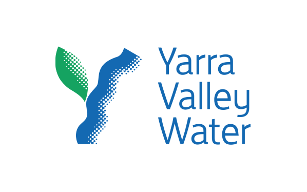

Learn more about the FME Platform and the value of FME Flow.
After completing this lesson, you’ll be able to:
FME Flow (formerly FME Server) is a powerful product for handling large volumes of data at the enterprise level. FME Flow allows you to upload and deliver data in a self-serve manner, respond to data and events in real time, and automate your workflows to reduce manual effort.
FME Form and FME Flow are the two major FME Platform products. One of FME Form's applications is FME Workbench, a no-code authoring environment to read, write, and transform your data. After you build workflows in FME Workbench, FME Flow expands on the local processing abilities of FME Form and deploys your workflows to enterprise-level capabilities. FME Flow brings your data workflows to life with powerful solutions, including:
Learn more about the FME Platform and the value of FME Flow.
Self-serve allows the end-user to select and download the required data in the required format and structure or to upload data for processing. It eliminates the need for a data manager or analyst to distribute data manually.

Yarra Valley Water, the largest water utility in Melbourne, uses FME to meet customer and contractor demands with self-serve data access. They also use FME to transform and translate complex spatial data from one format to another. System designers and external contractors upload their engineering drawings in DGN or DXF format to FME Flow. FME automatically validates them to ensure they meet standards and then transfers them to their GIS database. This process has helped serve over 2 million people and requires minimal human intervention.
Real-time is the ability to react to real-time events and sensors, carry out immediate updates, and deliver instant notifications. This ability of FME Flow ultimately allows subscribers to have the most up-to-date data and information for their business decision-making.

Pelmorex Corp. (The Weather Network, MétéoMédia) uses FME Flow to provide real-time data on lightning strikes for critical decision-making. Using FME, Pelmorex restructures lightning strike data from non-spatial lat/long queries into a styled KML that clients can access via Google Earth, an ArcGIS Viewer, email alerts, and more to allow clients to take action when a strike occurs immediately. Without using FME, the estimated time to build their Lightning Detection Network (LDN) was six to seven months; however, they built this in just three weeks.
Automation is the ability to process data on a specific schedule and spontaneously move data through different systems and web services, even onto mobile platforms and devices. It allows data to move from anywhere to anywhere without manual intervention. FME Flow Automations are very versatile and respond to a variety of events, both internal and external to FME Flow, allowing you to implement custom data processing with ease.
The City of Naperville automates creating Cityworks work orders using FME Flow. Citizens report issues via a web form survey, which FME Flow automatically processes into service requests across their Public Works, Electrical, Finance, and IT departments. Naperville has Survey123 submissions trigger FME Flow Automations to filter, process, and create work orders, freeing significant amounts of time for staff to focus on other high-value tasks. So far, Naperville has automated over 3,300 service requests and work orders, allowing one employee to achieve the work of three specialized staff.

The Vancouver International Airport (YVR) uses FME to push the boundaries of traditional airport operations through FME Flow's real-time data integration and automation. YVR faces the challenge of managing an extensive range of data, from GIS information to complex infrastructure and real-time data. They use FME Flow to eliminate data silos and streamline operations to enhance the passenger experience, even creating a digital twin application for indoor mapping.
Watch the video below to learn more about how YVR transforms airport operations using FME.
Check out FME Customer Stories for more information on these use-cases and explore more stories from thousands of FME customers.